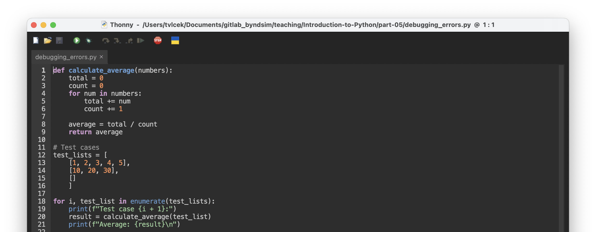

list_example = [1, 2, 3, 4, 5]
set_example = {1, 2, 3, 4, 5}
dict_example = {"a": 1, "b": 2, "c": 3}
tuple_example = (1, 2, 3, 4, 5)Lecture V - Handling Errors
Programming with Python
Quick Recap of the last Lecture
Data Structures
- Newly introduced data structures:
- Tuples: Ordered, immutable collections
- Lists: Ordered, mutable collections
- Sets: Unordered collections of unique elements
- Dictionaries: Key-value pairs
. . .
Operations and Methods
- Each data structure has specific operations and methods:
- Tuples and Lists: Indexing, slicing, concatenation
- Sets: Union, intersection, difference
- Dictionaries: Key-based access,
keys(),values()
. . .
Tip
Comprehensions for concise creation of these structures are often used in practice to create new data structures from existing ones.
I/O and File Handling
- Basic file operations
- Opening files with
open() - Reading and writing files
- Using the
withstatement for safer file handling
- Opening files with
. . .
Note
This covers the main points from our last lecture on data structures and file handling in Python.
Exceptions
What are Exceptions?
- Exceptions are discovered errors that occur during the execution
. . .
def divide_numbers(a, b):
result = a / b
return result
print(divide_numbers(10, 0))
print("I will not be printed as the program crashed before."). . .
ZeroDivisionError: division by zero
. . .
Warning
Undiscovered errors can be very hard to debug and can cause crashes and other issues.
Common Built-in Exceptions I
ValueError: argument of correct type but inappropriate valueTypeError: function applied to object of inappropriate typeNameError: raised when a local or global name is not foundIndexError: raised when a sequence subscript is out of rangeKeyError: raised when a dictionary key is not foundFileNotFoundError: file or directory not foundZeroDivisionError: division or modulo by zero
Common Built-in Exceptions II
AttributeError: attribute reference or assignment failsImportError: import of a modulefailsSyntaxError: parser encounters a syntax errorIndentationError: indentation is not correctRuntimeError: error does not fall into any category
. . .
Note
The list of built-in exceptions is even longer, these are just the most common ones. We won’t cover the errors listed here in detail, but it is good to be aware of them.
try-except Blocks
try-exceptblocks are used to handle exceptionstryblock contains the code that might raise an exceptionexceptblock contains the executed code if an exception occurs
. . .
def divide_numbers(a, b):
try:
result = a / b
return result
except ZeroDivisionError:
return "Error: Division by zero is not allowed."
print(divide_numbers(10, 0))
print("I will be printed as the exception was handled!")Error: Division by zero is not allowed.
I will be printed as the exception was handled!try-except Blocks for specific exceptions
- We can also specify the type of exception we want to catch
- This allows for more specific error handling
try:
# Code that might raise an exception
# ...
except ExceptionType as e:
# Code to handle the specific exception type
# ...
except Exception as e:
# Code to handle any other exceptions
# .... . .
Note
as e is used to store the exception in a variable. Not mandatory, but good practice to do so.
try-except Blocks in Action
>Grouptask: Solve the following problem using try-except blocks:
. . .
# Implement a function that converts a string to an integer
# 1. Try to convert the input_string to an integer
# 2. If successful, return the integer
# 3. If a ValueError occurs, catch it and return "Invalid input: not a number"
# 4. If any other exception occurs, catch it and return
# "An unexpected error occurred: [type of exception]"
# Your code here
# Test cases
print(string_to_int("42")) # Should print: 42
print(string_to_int("Hello")) # Should print: Invalid
print(string_to_int([123])) . . .
Question: What is the output of the last line?
Raising Exceptions
Raising Exceptions
- We can raise exceptions ourselves using the
raisestatement - It allows us to handle errors in a more controlled manner
. . .
def validate_age(age):
if age < 0:
raise ValueError
return age
print(validate_age(25)) # This will print 25
print(validate_age(-1)) # This will raise a ValueError>Task: Try to raise an exception in the function above by passing a string to the validate_age function. What happens?
Raising Exceptions with Custom Messages
- We can also raise exceptions with custom messages
- This helps to provide more information about the error
. . .
def validate_age(age):
if age < 0:
raise ValueError("Age cannot be negative")
return age
print(validate_age(25)) # This will print 25
print(validate_age(-1)) # This will raise a ValueError. . .
>Question: What do you think the raise statement will show now?
Creating Custom Exceptions
- We do so by inheriting from the built-in Exception class
- This allows us to create more specific exceptions for our own code
class InvalidUsernameError(Exception):
pass
def get_valid_username():
while True:
try:
username = input("Please enter a username (no spaces): ")
if " " in username:
raise InvalidUsernameError("Username must not contain spaces.")
return username
except InvalidUsernameError as e:
print(f"Invalid username: {e}")
print("Please try again.")Assertions
What are Assertions?
- Assertions are statements that check if a condition is true
- If the condition is false, an
AssertionErroris raised - We could use them to check the results of a calculation
. . .
x = 9
y = 10
assert x < y, "x is not smaller than y"
assert isinstance(y, float), "y is not a float". . .
>Task: Try to run the code above and discuss what happens.
. . .
Note
isinstance is a built-in function that checks if an object is an instance of a class.
Assertions in Action
>Grouptask: Solve the following problem using assertions:
# Implement a function that takes a list of integers and returns the sum of the numbers.
# 1. Use assertions to check if the input is a list
# 2. Use assertions to check if the list contains only integers.
# 3. If the list contains only integers, return the sum of the numbers
# Your code here
# Test cases
print(sum_of_numbers([1, 2, 3, 4, 5])) # Should print: 15
print(sum_of_numbers([1, 2.0, 3, 4, 5])) # Should print: AssertionErrorDebugging
What is Debugging?
- Debugging is the process of finding and fixing errors in code
- We can use
printandassertstatements to debug our code - We can also use debugging tools that are built into most IDEs
Using Print and Assert
print: check the values of variables at different pointsassert: check calculations or the types of variables
. . .
x = "Hello" # x is a string
print(x)
x = 42.0 # x is a float
print(x)
assert isinstance(x, float), "x is not a float"
assert x == 42.0, "x is not 42.0"Hello
42.0. . .
Note
While this can be useful, it is not always the best way to debug code.
Using Debugging Tools
- We can also use debugging tools built into most IDEs
- Allow to step through code, set breakpoints, and inspect variables
- We will use Thonny, but there are many other options
Debugging in Thonny I
>Task: Open Thonny and copy the following code:
def calculate_average(numbers):
total = 0
count = 0
for num in numbers:
total += num
count += 1
average = total / count
return average
# Test cases
test_lists = [
[1, 2, 3, 4, 5],
[10, 20, 30],
[]
]
for i, test_list in enumerate(test_lists):
print(f"Test case {i + 1}:")
result = calculate_average(test_list)
print(f"Average: {result}\n")Debugging in Thonny II
- Click on the bug icon on the left side of the screen

Debugging Tools
>Task: Run the code and use the debugging tools to find the error.
- Use step over, step into and step out to navigate through your code
- Use the variable viewer to inspect variables at different points
- Use the breakpoints to pause the execution at a specific point
. . .
>Question: What do you think the error is?
. . .
Note
The enumerate function used in the code is super helpful function that returns a tuple containing the index and the value of the item in the list and it is not the error.
Using Logging
- We can also use logging to track the execution of a program
- It is a structured way to log errors and other issues
- You can specify the level of severity for each log message
- Hide messages of a certain severity if you want to during execution
. . .
Note
And that’s it for todays lecture!
We now have covered the basics of errors, exceptions and debugging in Python. Logging is beyond our scope, but it is good to know should you work with larger codebases later on.
Literature
Interesting Books
- Downey, A. B. (2024). Think Python: How to think like a computer scientist (Third edition). O’Reilly. Link to free online version
- Elter, S. (2021). Schrödinger programmiert Python: Das etwas andere Fachbuch (1. Auflage). Rheinwerk Verlag.
. . .
Tip
Nothing new here, but these are still great books!
. . .
For more interesting literature to learn more about Python, take a look at the literature list of this course.